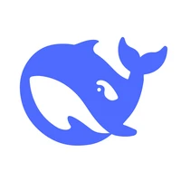
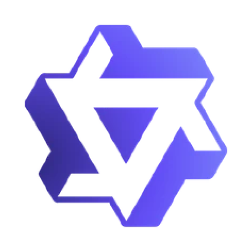
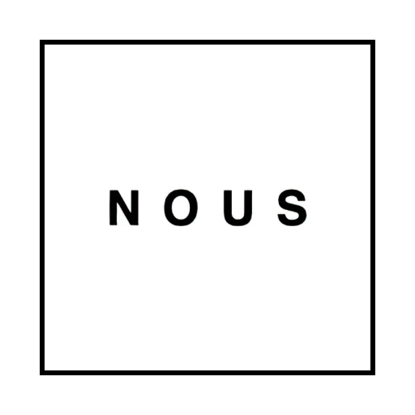
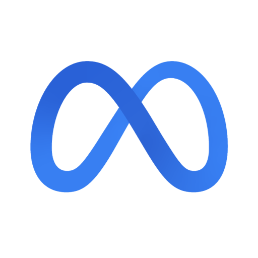
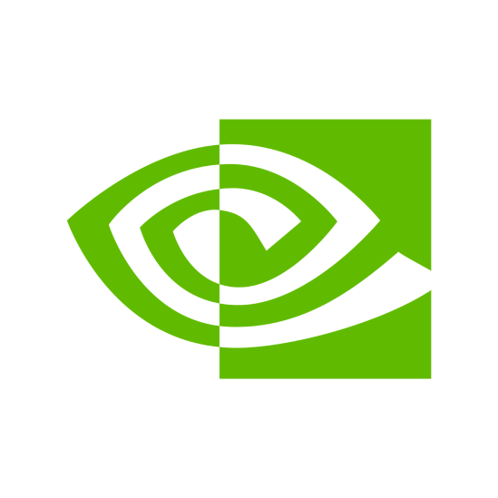
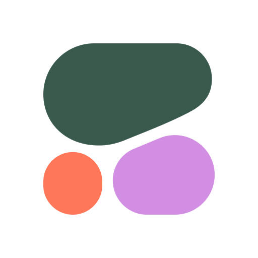

Hello, QuickAI Canvas!
Basic mode {
Qwen2.5-72B-Instruct}
Default conversation model
Coding mode {
Qwen2.5-Coder-32B-Instruct}
Supports advanced coding tasks

DeepSeek-R1
The first reasoning model from DeepSeek.
DeepSeek-R1-Distill-Qwen-32B
The first reasoning model from DeepSeek, distilled into a 32B dense model. Outperforms o1-mini on multiple benchmarks.
Phi-3.5-mini-instruct
One of the best small models (3.8B parameters), super fast for simple tasks.

Qwen/QwQ-32B-Preview
QwQ is an experiment model from the Qwen Team with advanced reasoning capabilities.
Mistral-Nemo-Instruct-2407
A small model with good capabilities in language understanding and commonsense reasoning.
Mistral-7B-Instruct-v0.3
An instruct fine-tuned version of the Mistral-7B-v0.3.

Hermes-3-Llama-3.1-8B
Nous Research's latest Hermes 3 release in 8B size. Follows instruction closely.
Qwen2.5-Coder-7B-Instruct
latest series of Code-Specific Qwen large language models (formerly known as CodeQwen).
Math models
Qwen2.5-Math-1.5B
Mathematical Model by qwen Team.
Multi-modal models
Vision {
Llama-3.2-11B-Vision-Instruct}
The latest multimodal model from Meta! Supports image inputs natively.
Qwen2-VL-7B-Instruct
Latest iteration of Qwen-VL model.
Pro Models

Llama-3.3-70B-Instruct
A fast and extremely capable model matching closed sourced models' capabilities

Llama-3.1-Nemotron-70B-Instruct-HF
Nvidia's latest Llama fine-tune, topping alignment benchmarks and optimized for instruction following.

c4ai-command-r-plus-08-2024
Cohere's largest language model, optimized for conversational interaction and tool use. Now with the 2024 update!
Mistral models
mistral-large-latest Recommended
The latest iteration of the large LLM.
mistral-small-2402
A compact language model tailored for efficient processing with a focus on smaller datasets and applications requiring lower resource consumption.
open-mixtral-8x22b
A powerful ensemble model optimized for complex language tasks and high accuracy.
open-mixtral-8x7b
For enhanced performance in diverse NLP applications.
open-mistral-7b
General-purpose natural language understanding and generation tasks
mistral-large-2407
An enhanced version of the large model, featuring improvements in training data and techniques for superior language comprehension and generation.
mistral-large-2402
A large language model optimized for high-performance tasks, offering advanced capabilities in understanding and generating human-like text.
mistral-medium
A medium-sized model that strikes a balance between performance and resource efficiency, suitable for a wide range of NLP tasks.
mistral-small-2501
A further refined small model designed for rapid inference and deployment in resource-constrained environments while maintaining robust language capabilities.
mistral-small-2409
An updated small model variant that improves upon its predecessor with enhanced training techniques for better performance in lightweight applications.
ministral-8b-2410
provides enhanced capabilities for various NLP tasks while maintaining efficiency in resource usage.
ministral-3b-2410
Variant designed for efficient processing in specific applications, offering a balance between performance and resource usage.
open-mistral-nemo
Variant tailored for conversational AI applications, focusing on generating human-like dialogue and understanding context.
mistral-saba-2502
A specialized model focused on specific language tasks, leveraging advanced techniques for improved contextual understanding and response generation.
mistral-large-2411
An iteration of the large model, designed to deliver state-of-the-art performance across various natural language processing benchmarks.
mistral-small-2409
An updated small model variant that improves upon its predecessor with enhanced training techniques for better performance in lightweight applications.
Mistral Coding models
codestral-latest @Recommended
Latest coding-focused model.
codestral-mamba-2407
A high-performance coding model designed for rapid code generation and debugging, optimized for software development environments.
codestral-2501
An advanced coding-focused model that builds on previous iterations, offering improved performance in programming-related tasks and queries.
codestral-2505
An advanced coding-focused model that builds on previous iterations, offering improved performance in programming-related tasks and queries.
Mistral Vision models
mistral-small-latest
The latest iteration of the small model, designed to deliver state-of-the-art performance across various natural language processing benchmarks.
pixtral-large-2411
A variant in the MistraVision series, optimized for high-quality image and text processing, suitable for complex visual understanding tasks.
pixtral-12b-2409
A variant in the MistraVision family designed for advanced image and text integration tasks, enhancing multimodal applications.
Mistral Moderation models
mistral-moderation-2411
Focused on content moderation, designed to identify and filter inappropriate or harmful content in text data.
Mistral embedding models
mistral-embed
Designed for embedding generation, facilitating the transformation of text into vector representations for downstream machine learning tasks.
Message
Request completed in 5 seconds
Error
Error during Ai Response
Chats
Text copied